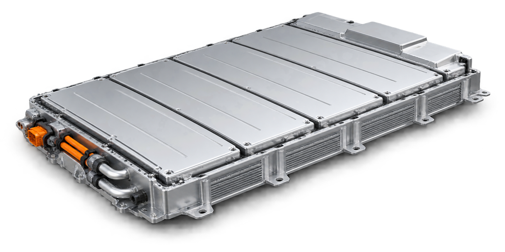

EV Battery Pack
EV 배터리팩
모듈 설계부터 팩 조립·검사까지 한 라인에서 끝내 소형 전기차와 특수차량에 맞춘 배터리팩을 공급합니다.
설명 더보기
차종별 공간과 주행 조건에 맞춰 셀 배열과 냉각 구조를 새로 설계하고, 시제품 제작부터 양산 검증까지 같은 팀이 맡아 개발 기간을 줄였습니다. 충돌·진동·방수 시험도 사내 시험동에서 직접 진행해 인증 준비에 드는 시간을 아낄 수 있습니다.
팩마다 BMS 기록을 남겨 출고 이후에도 셀 상태를 추적할 수 있으며, 전기 운반차·골프카· 농기계 등 소량 다품종 고객의 요구에도 빠르게 대응하고 있습니다. 설계 변경이 생기면 담당 엔지니어가 도면과 시험 계획을 함께 고쳐 드립니다.